Use Case
Let’s take the example of the ecommerce company website which allows the customers to shop online. The company COO and operations team would be interested in some of the metric like below in a real time fashion. The same requires custom development which involves a lot of effort and budget.
- Number of users logged into the site
- Number of purchase transactions
- Number of returns
- Number of customer escalations
CloudWatch provides a way to create customizable dashboard by which many of the AWS related metrics like EC2 CPU, Disk and Network usage can be monitored in real time. With a little bit of development and effort we can also use the CloudWatch dashboard to watch the above ecommerce application level metrics in AWS itself.
In this use case, we have a DynamoDB table called Metrics which has the details like the number of users logged into the system, number of purchase transactions etc and these details are updated in real time. We have a Lambda function which is scheduled every 1 minute using the CloudWatch scheduler, the Lambda function gets the metrics from the DynamoDB table and publishes the metrics to the CloudWatch from where the CloudWatch dashboard gets updated on a regular interval.
An AWS IAM user can be created for the COO or person in the operations team with access to just these dashboards, so they just need to login to the AWS console and see the dashboards. Below is a sample dashboard that can be created by CloudWatch.
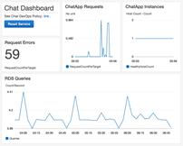
AWS Services: CloudWatch, IAM, Lambda, DynamoDB
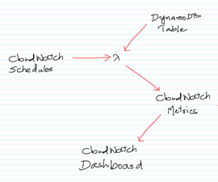
-- Go to the DynamoDB Management Console and click on “Click Table”.
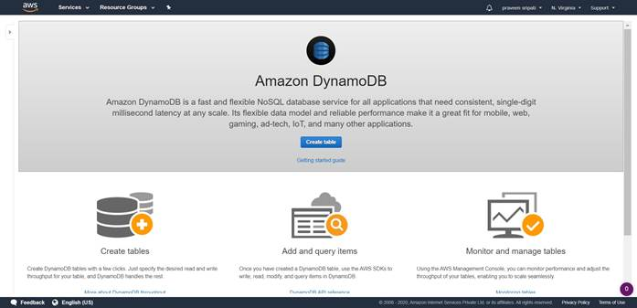
-- Enter the table name as Metrics and the Primary key as Name (String). Click on Create.
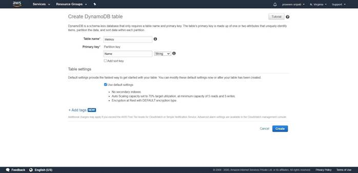
-- In a few minutes a DynamoDB table would be created with no items (rows) in it as shown below. An upstream application would be aggregating the number of users logged into the ecommerce application and updating this table.
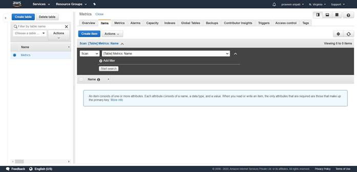
-- Go to the IAM Management Console and create a Role called Role4EC2 and attach the AmazonDynamoDBFullAccess Policy to it.
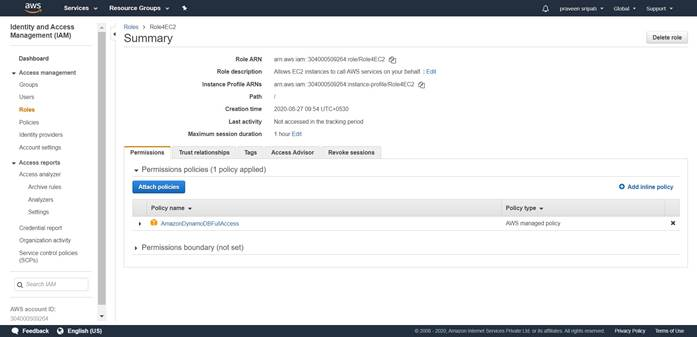
-- Create an EC2 with the below details.
-- Ubuntu OS
-- t2.micro
-- Security Group allowing inbound 22/SSH
-- Role4EC2 IAM Role
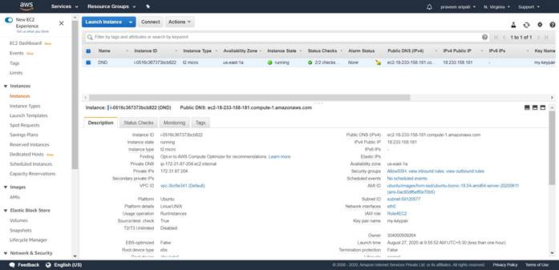
-- Connect to the EC2 instance via Putty and execute the below commands to install Python, boto3 (AWS SDK for Python) and configure the same.
#become root
sudo su
#get the list of softwares
apt-get update
#install python and pip
apt-get install python2.7 python-pip -y
#install AWS SDK for Python
pip install boto3
exit
mkdir .aws
echo -e "[default]\nregion=us-east-1" > .aws/config
-- Create insert-into-dynamodb.py fie with the below code. This Python program takes an integer as an input and upserts an item in the DynamoDB table.
import sys
import boto3
dynamodb = boto3.resource('dynamodb')
table = dynamodb.Table('Metrics')
response = table.update_item(
Key={
'Name': 'Users'
},
UpdateExpression='SET Connected = :newConnected',
ExpressionAttributeValues={
':newConnected': sys.argv[1]
},
ReturnValues="UPDATED_NEW"
)
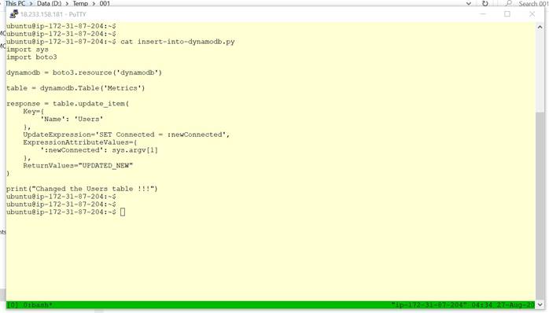
-- Execute ‘python insert-into-dynamodb.py 100” command in the Putty session and notice an item getting inserted into the DynamoDB Users table.
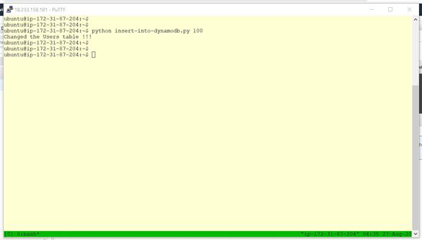
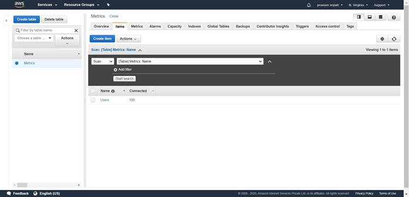
-- Go back to the Putty session and execute ‘python insert-into-dynamodb.py 200” command. Notice that the item in the DynamoDB table gets updated. This behaviour is called upsert.
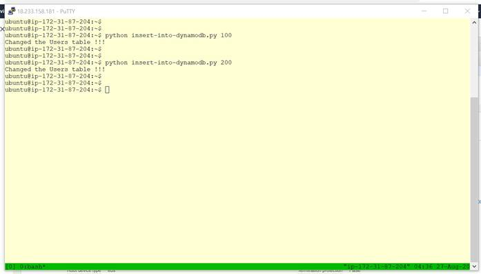
-- Go to the IAM Management Console, Policies and click on ‘Create policy’. This policy is used to give CloudWatch Put Metrics permission to the Lambda function later.
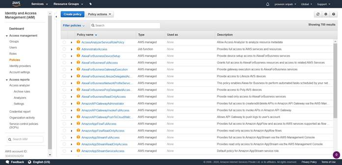
-- Click on the JSON tab and enter the below JSON. Click on ‘Review policy’.
{
"Version": "2012-10-17",
"Statement": [
{
"Effect": "Allow",
"Action": [
"cloudwatch:PutMetricData"
],
"Resource": "*"
}
]
}
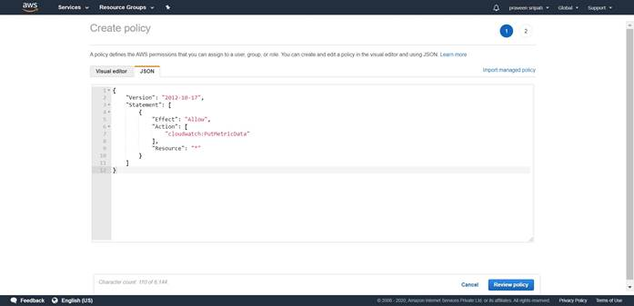
-- Enter the policy name as ‘CloudWatch-PutMetrics-Policy’ and click on ‘Create policy’.
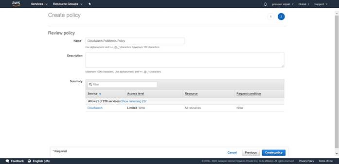
-- From the same IAM Management Console, create a Role for Lambda (Role4Lambda) with the AmazonDynamoDBFullAccess, AWSLambdaBasicExecutionRole and the previous created policy (CloudWatch-PutMetrics-Policy) attached.
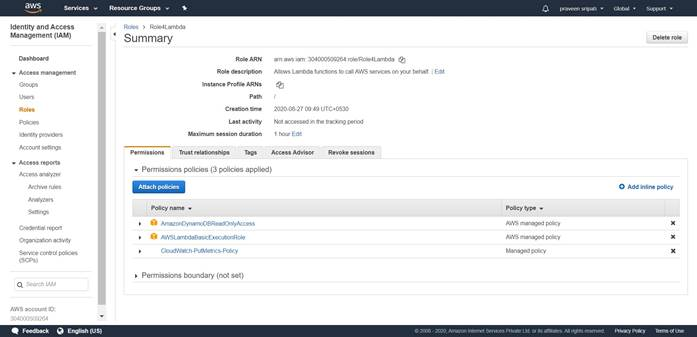
-- Go to the Lambda Management Console and click on “Create Function”.
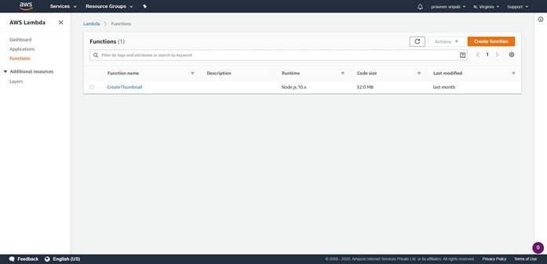
-- Enter the function name as UpdateCloudWatchMetrics, the Runtime as Python 2.7 and attach the Role (Role4Lambda) created in the previous step. Click on “Create function”.
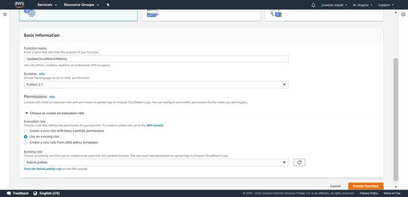
-- Replace the Python code with the below code. The Lambda Python code would get the number of users logged into the ecommerce application from the DynamoDB table and send the same to the CloudWatch metrics.
import boto3
def lambda_handler(event, context):
dynamodb = boto3.resource('dynamodb')
table = dynamodb.Table('Metrics')
response = table.get_item(Key={'Name': 'Users'})
connected = response['Item']['Connected']
print ("Got the metrics from DynamoDB")
cloudwatch = boto3.client('cloudwatch')
response = cloudwatch.put_metric_data(
MetricData = [
{
'MetricName': 'logged-in-users',
'Unit': 'Count',
'Value': int(connected)
},
],
Namespace = 'MyEcommerceApp'
)
print ("Sent the metrics to CloudWatch")
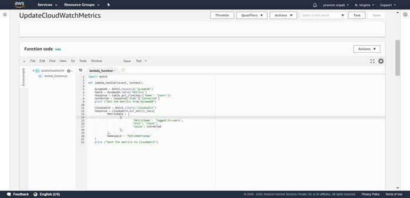
-- The Lambda is taking more than the default execution time of 3 seconds. Go to the “Basic settings” and click on Edit.
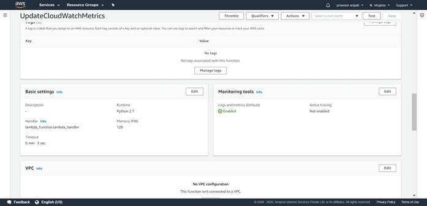
-- Change the Timeout to 10 seconds and click on Save. Click on Save again to save the Lambda function.
Now the maximum execution time for the Lambda function is 10 seconds, which would be more than enough to get the data from the DynamoDB table and send the metrics to the CloudWatch.
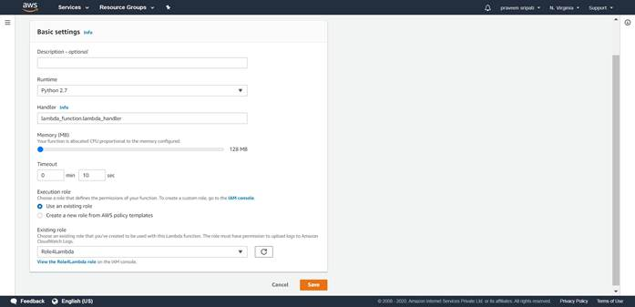
-- Now the Lambda needs to be executed at regular intervals using the CloudWatch scheduler. Go to the CloudWatch Management Console and the Rules Tab. Click on “Create rule”.
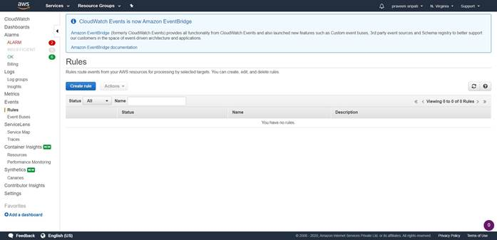
-- Select the Schedule radio button and make sure the frequency is 1 minute. In the Targets select Lambda function as the target and the Lambda function created in the previous step. Click on “Configure details”.
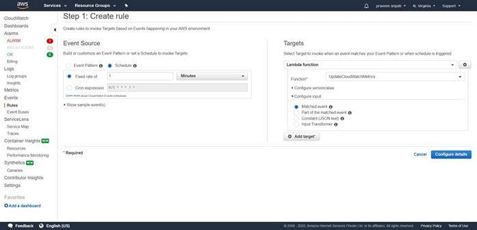
-- Enter the rule name as “CallLamda-1m-freq” and click on “Create rule”. Now the Lambda function would be called automatically every minute.
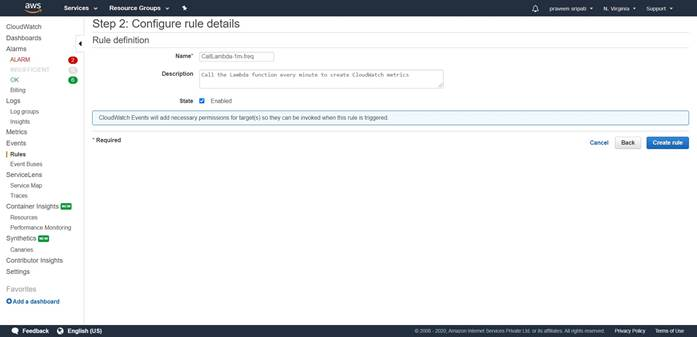
-- Leave as it is as of now. But, under the Actions tab there is an option for disabling the scheduler, so that it won’t call the Lambda function regularly. By default, the Rule is enabled.
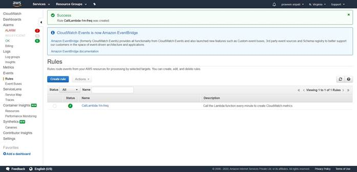
-- The print statements in the Lambda function writes to the CloudWatch logs. Go to the CloudWatch Management Console and then to the “Log groups” tab. Click on the particular “Log group”.
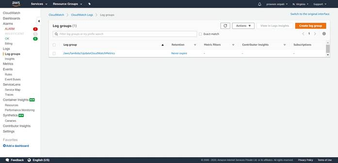
-- Click on the “Log streams”.
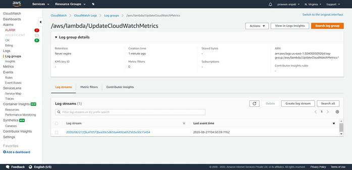
-- If everything has been setup till now properly. Then we should see “Got the metrics from DynamoDB” and “Sent the metrics to CloudWatch” in the logs. There should be no exceptions over there. These are the messages from the Lambda function.
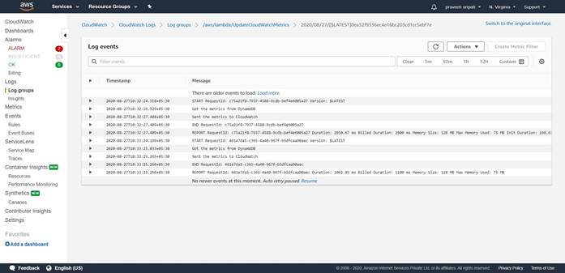
-- Not the CloudWatch would be getting the number of users logged in metrics from the Lambda every one minutes. Now we should be able to plot a Dashboard for the same.
In the CloudWatch Management Console go to Metrics tab. In a few minutes the MyEcommerceApp should appear in the “Custom Namespaces”. Click on the same.
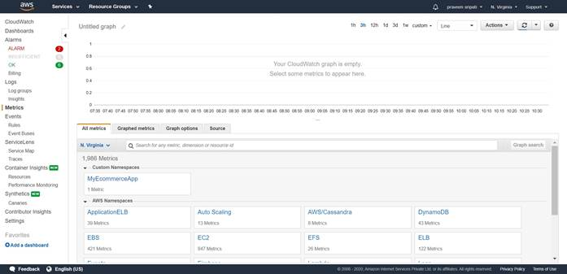
-- Click on “Metrics with no dimensions”.
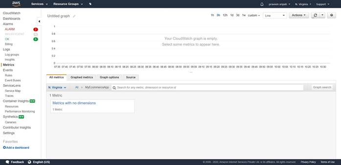
-- In a few minutes the “logged-in-users” metrics should appear there.
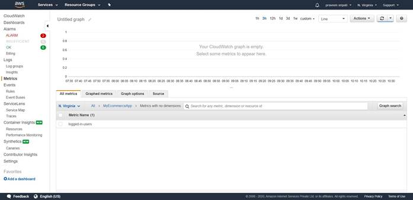
-- Click on the metric and select “Add to graph”.
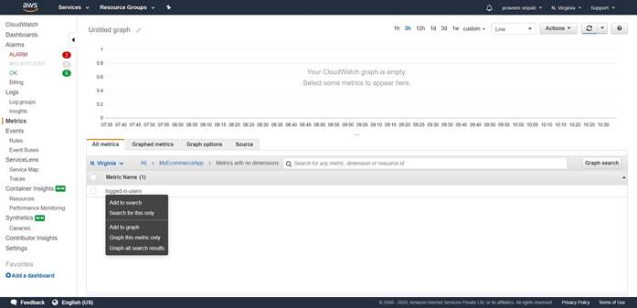
-- In the same screen go to the “Graphed metrics” tab. Make sure
- Statistic is set to Average
- Period is set to 5 minutes
- In the Actions, auto refresh and 10 seconds are selected.
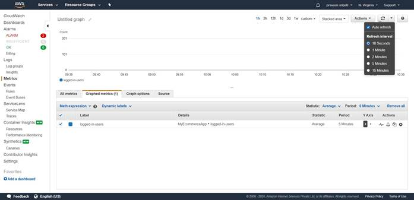
-- Go back to the Putty and execute “python insert-into-dynamodb.py 120” with different values as shown below at roughly 1-minute intervals for the next 15 minutes. Try to have high variance, this will give peaks and valleys in the dashboard later.
The value to the Python script will be populated in the DynamoDB table and the same will be picked by the Lambda and sent to the CloudWatch metrics.
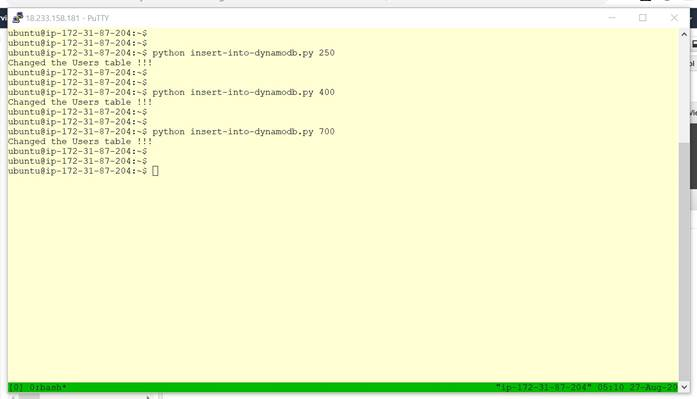
-- After the above task a similar graph will be populated with time on the x-axis and number of average users logged into the ecommerce application on the y-axis. The graph refreshes every 10 seconds, you can also click on the refresh button.
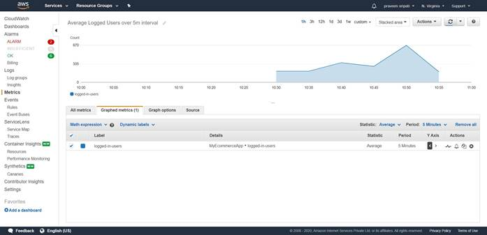
-- Go the Actions for the Graph and select “Add to dashboard”.
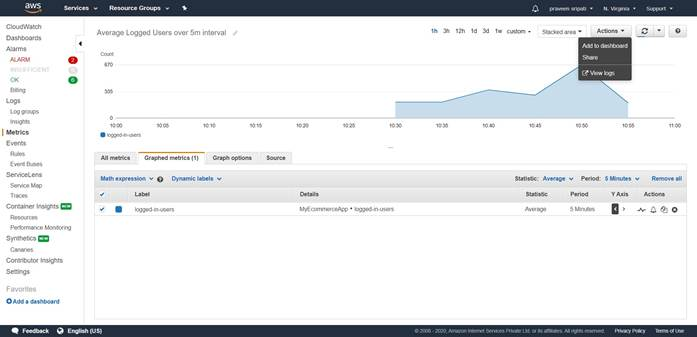
-- Click on “Create a new” and enter the name as LoggedInUsers. Click on “Add to dashboard”.
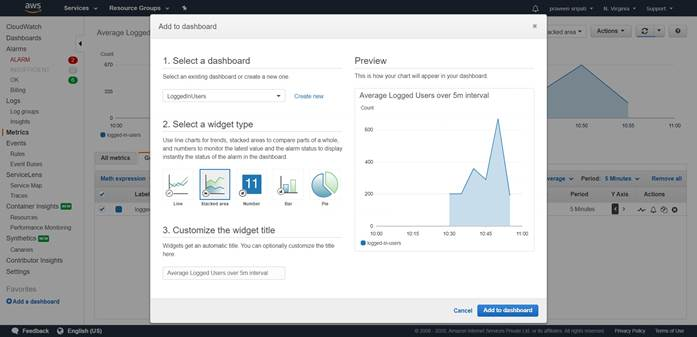
-- The dashboard would be added to the CloudWatch as shown below. Click on the dashboard.

-- Now the COO or the operations team in an ecommerce company can know the average numbers of users logged into the application at any point of time.
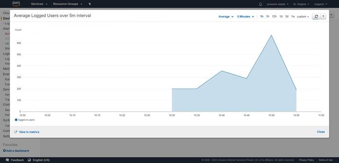